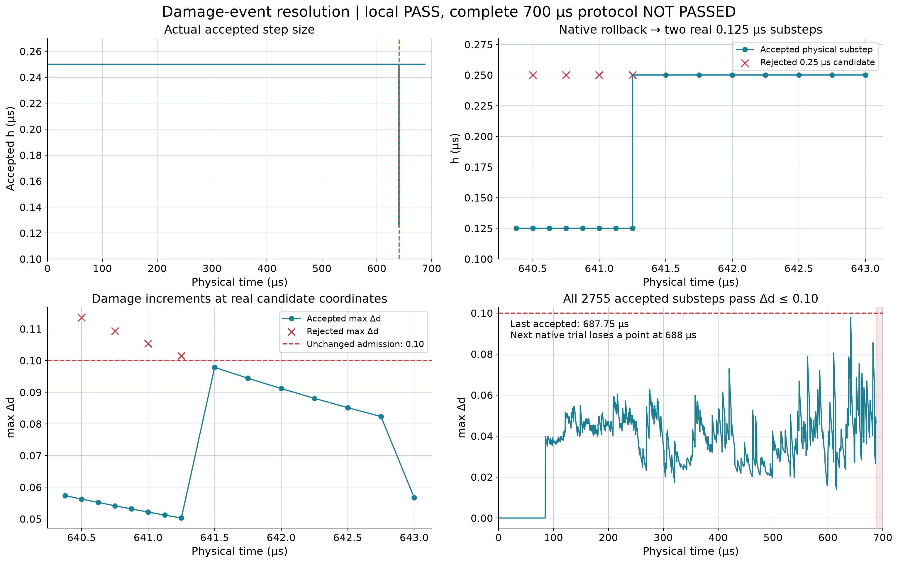
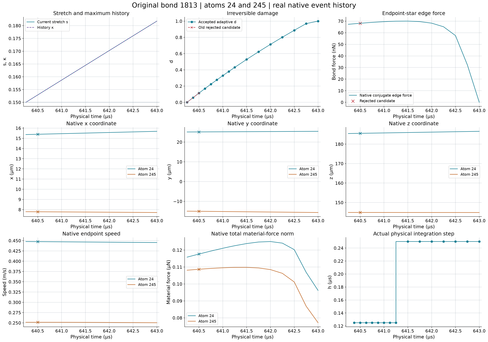
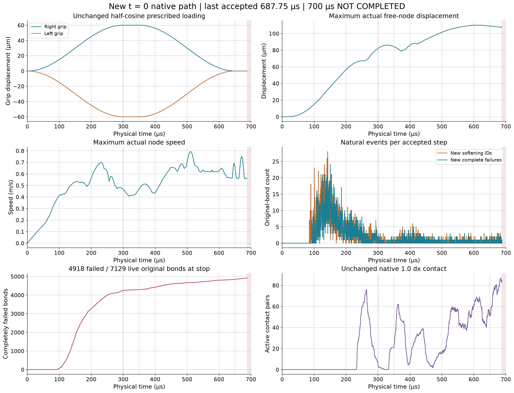
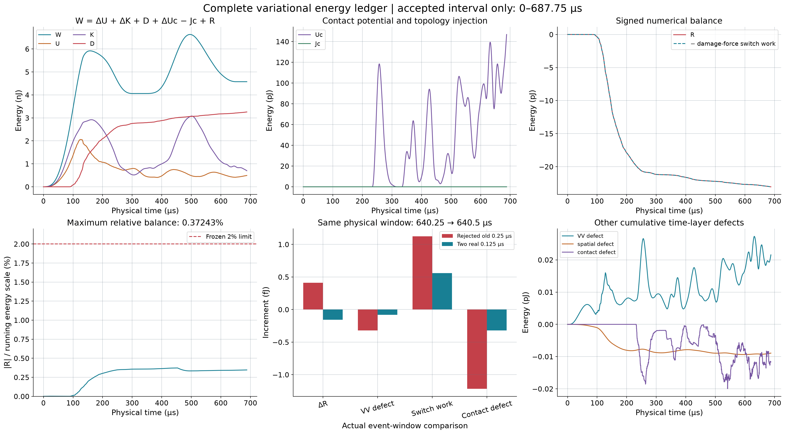
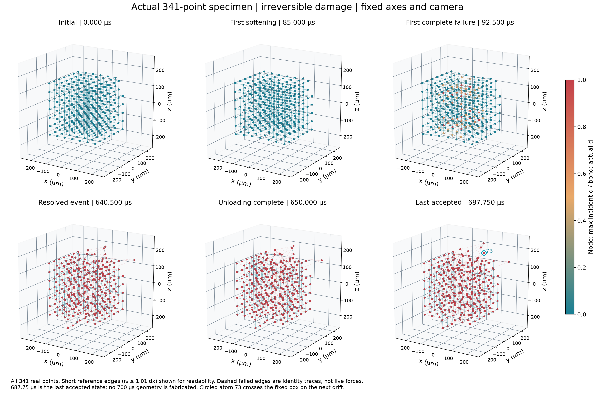

原生软化损伤事件分辨积分
2026-10-14 · 341节点 / 12047原始键 · 1 MPI
局部事件 PASS；完整700µs FAILED_ATOM_LOSS。
2755个接受子步、4次损伤拒绝，最小0.125µs；最大Δd=0.09786763，接受区间最大能量余额0.37243%。最后接受687.75µs，下一688µs候选在固定盒子丢失节点73。材料与门槛均未改变。

图1：接受/拒绝、局部二分与恢复基准步长 · SVG矢量图
图2：真实bond1813与节点24/245演化 · SVG矢量图
图3：实际动力学至687.75µs；红色尾区未完成 · SVG矢量图
图4：完整自由能账本与局部力切换误差 · SVG矢量图
图5：固定相机下的真实341材料点；没有700µs伪造末态 · SVG矢量图24项中文报告 · 状态JSON · 实际丢点诊断 · 算法设计
未认证：完整700µs、全局时间收敛、接触物理精度、材料Gc及P4准入。正式峰值RAM及部分内存事件流未能在异常后写出，详见报告。